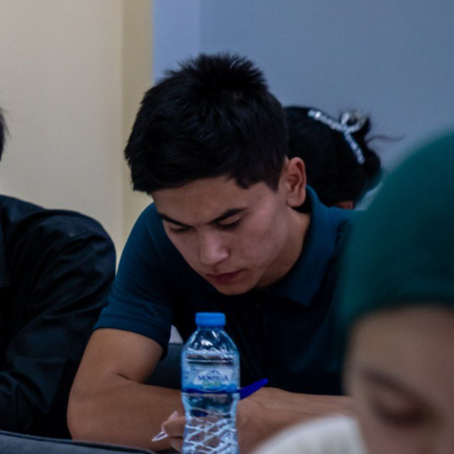

Ahrorjon Ibrohimjonov 👋
🎓 Kompyuter fanlari talabasi — Flask · Supabase · Python Developer
🧑💻 Men haqimda
Men O‘zbekistonlik dasturchiman. Python va Flask orqali veb ilovalarni yaratishni yaxshi ko‘raman. Maqsadim — haqiqiy muammolarga foydali yechimlar topish.
🛠 Texnologiyalar
Python
Flask
Django
Supabase
Docker
PostgreSQL
📈 GitHub Statistika
🚀 Loyiha va Faoliyat
GitHub profilimda ochiq manbali loyihalarimni ko‘rishingiz mumkin. Flask, Django, va Supabase asosidagi ishlanmalar joylangan.